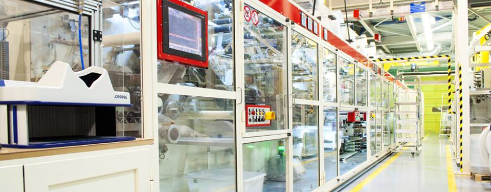
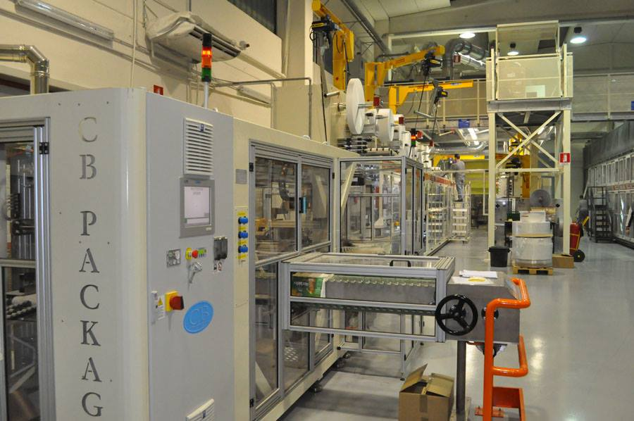
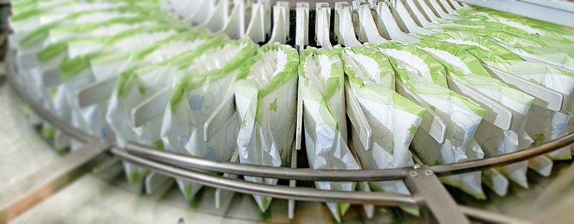
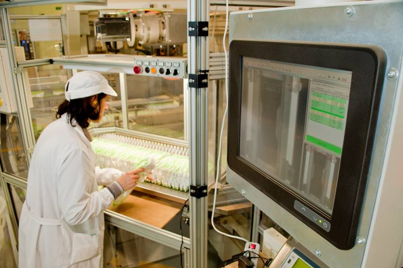

История фабрики Fas S.p.a. началась в городе Корато, Италия в 1982 году. В начале фабрика выпускала только гигиенические прокладки для женщин, а несколько лет спустя, в 1987 году запустила линию по производству подгузников для детей. Фабрика занимает площадь в 4000 квадратных метров, которая разделена на две отдельные зоны: завод - площадью 1500 квадратных метров, где производится продукция и склады для хранения сырья и готовой продукции площадь около 2500 квадратных метров.
Работа с гигиеническими продуктами означает заботу о качестве повседневной жизни. Фабрика Fas S.p.a. предоставляет клиентам продукцию и услуги высокого качества. Для достижения этой цели были созданы прочные партнерские отношения с лучшими поставщиками сырья на рынке.
Тщательный отбор сырья, несколько этапов испытаний качества, политика экологической безопасности - это некоторые из основных вопросов, которые фабрика FAS S.p.a. решает в ходе производственного процесса.
Производственный процесс полностью компьютеризирован и строго контролируется. Всего за несколько минут сырье, такое как целлюлоза, SAP, нетканые материалы и упаковочные материалы, превращаются в готовую продукцию. Все данные, полученные в результате лабораторных испытаний, хранятся в базе данных. Высококвалифицированный персонал постоянно контролирует качество продукции.
В настоящее время фабрика Fas S.p.a. достигла оборотов в 9 000 000 евро, 70% оборотов приходится на производство и продажу подгузников для детей, а остальные 30% - на производство и продажу гигиенических прокладок для женщин.
Постоянная работа по совершенствованию производственного процесса, контроль качества, сертификации, обслуживание клиентов, обучение сотрудников, делают фабрику Fas S.p.a. современной, способной удовлетворить растущие потребности рынка и клиентов.